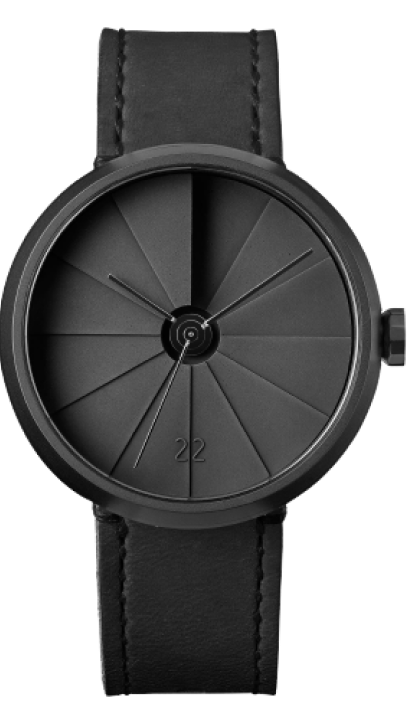

mor705
Watch
The watch also features a tough and durable
sapphire a Swiss Sellita SW200-1 automatic
winding movement that has a power
reserve

The watch also features a tough and durable
sapphire a Swiss Sellita SW200-1 automatic
winding movement that has a power
reserve
 1.png)
The watch also features a tough and
durable sapphire crystal glass and comes
with a Swiss SW200-1 automatic winding
movement that has a power reserve.
 1.png)
The watch also features a tough and
durable sapphire crystal glass and
comes with a Sw12-1 automatic winding